Homogeneous LLM teams are evaluated against trained MARL reference systems.
Open-ended multi-agent coordination benchmark
Alem
Benchmarking Open-Ended Multi-Agent Coordination in Language Agents
Modern agents can survive, explore and complete long-horizon tasks -- yet still struggle to coordinate.
A JAX benchmark for long-horizon, open-ended multi-agent coordination. Building on Craftax and Multi-Agent Craftax / Craftax-Coop, Alem adds procedural coordination tasks, soft specialisation, communication and controllable difficulty. All through paired symbolic, pixel and text interfaces.
On Alem · finding 01Coordination is a distinct axis of difficulty, separate from base-task skill.
On Alem · finding 02On Hard, a frontier LLM approaches a 1B-step MARL baseline on coordination.
On Alem · finding 03Communication is the largest driver in our harness ablations.
01 · Leaderboard
Model leaderboard
The table is the front door for researchers comparing agents. It separates base-task competence from explicit coordination. Open the standalone leaderboard page ↗
Coordination reward is reported independently from base reward and total return.
17.5% Coord.% on Hard, matching the 1B-step MARL reference within confidence intervals.
| # | Model | Type / date | Harness | Base% | Coord.% | Total% |
|---|
Click any LLM score for the run config and how-to-run command. Bars show 95% bootstrap confidence intervals; dots show means. Type / date reports the selected difficulty's evaluation date; Harness links to the evaluation harness implementation. Base%, Coord.% and Total% are normalised separately, so Total% is not the sum of the other columns. MARL 100M / 1B are environment training steps, not model parameters. Submit a result →
Reference point · MARL baselines
Trained multi-agent RL is the reference for the LLM table above. It improves with compute and degrades as coordination difficulty rises — whereas most LLMs fail before difficulty even matters. IPPO, HyperMARL-IPPO, MAPPO and PQN-VDN, each at its training difficulty; the best 1B run is the reference row in the main table.
Show the MARL baseline table
| # | Algorithm | Base% | Coord.% | Total% |
|---|
Environment training steps, not model parameters (~25M-parameter recurrent policies). Means with 95% bootstrap CIs across 5 seeds. The primary leaderboard above includes the best MARL budget as a reference row.
02 · Gameplay
Watch each model play — and read what it says
The same world (Easy, seed 0) for all 13 language agents, sped up 8×, paired with the most interesting broadcast that agent sent to its teammates. The messages are verbatim from the logs — coordination emerges (and breaks down) in the models' own words.
or click any model below · scroll for all 13 →
Gemini 3.1 ProClosed (API)
“A1, let me know when your health is full and you're no longer stuck resting. Once you're ready, Give me food, then I will revive A0.”
GPT-5.4Closed (API)
“I'm moving east of the 3-agent tree at (27,23). A2 move N to (27,24); A0 if you stay at (27,22) and face south, we can sync Do after setup.”
Gemma 4 31BOpen-weight
“A2, I'm dead at (24,24). BE CAREFUL: the Orc Soldier was at (24,25). If you come North from (24,29) you'll run straight into it — clear it or find a safe path first.”
Gemma 4 26B-A4BOpen-weight
“Sync tree at 27,23. I am at 27,24 facing North. Agent 0: go to 26,23 and face East. Agent 2: go to 27,22 and face South. Let's Do together when everyone is ready!”
Qwen 3.6 27BOpen-weight
“Thanks A2! After clearing the snail, please come revive me at (21,32). Agent 1 is also dead — revive me first so I can help revive them after.”
Qwen 3.6 35B-A3BOpen-weight
“A1: move East to (28,21), then North to (28,20), face East. I'm at (29,21) facing North. We sync-mine the stone at (29,20) next turn, and I'll give you the stone after.”
Qwen 3.5 122B-A10BOpen-weight
“A1 URGENT: you're blocking my path to the sync position! Move East to (25,32) to clear (24,32). I'm at (23,32) and can't pass through you — we need all 3 in position.”
Qwen 3.5 27BOpen-weight
“Heading to the tree at (27,23) — we need 3 agents to Do simultaneously. I'll take the west side. Agent 1 (forager), you're closest, take north or east; Agent 2 (miner), take south.”
Qwen 3.5 35B-A3BOpen-weight
“A1: handover at (33,28) — complete it now! A0: move E to (32,29) (blocked, turns you East), then E to (32,28), then E to (33,28) facing South.”
Qwen 3.5 9BOpen-weight
“Agent 0, move to (30,26) exactly — one step east, then one south. I need you adjacent to the furnace site from the east. Once there, we sync Do.”
Gemma 4 E4BOpen-weight
“Agent 0, I confirm I'll sync with you on the cow at (28,22) as soon as I'm revived. Securing that cow and drink is critical for our survival.”
Llama 3.3 70BOpen-weight
“Agent 2, be careful and try to find a way to revive us — we need to work together to survive. Prioritize your health and safety above all else.”
Llama 3.1 8BOpen-weight
“Agent 2, I'll meet you at the construction site and we can Do wood together. Let's make sure we have enough wood for the stone and iron tools.”
Clips are the world view of each model's Easy seed-0 episode, sped up 8×. Messages are unedited agent broadcasts from the same runs (lightly trimmed). Click a card for the synced replay, or browse the full per-step debug traces ↗.
02 · In action
One world, three agents, three interfaces.
The same open-ended world drives trained MARL teams and zero-shot language agents. Watch agents split work, broadcast intent, and synchronize their actions — or play the full reel.
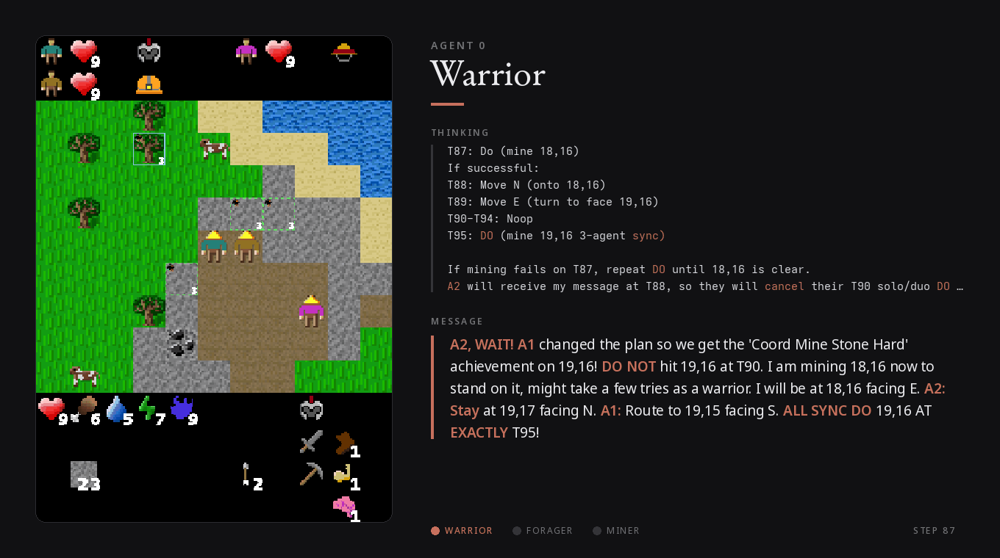
03 · Environment
One world, three interfaces, diverse coordination demands.
Alem isolates coordination by pairing a rich open-ended Craftax-style world with explicit synchronization, handover, specialization, and construction tasks.
What makes Alem different
Long horizon
Episodes last up to 10,000 steps across nine procedurally generated levels.
Open ended
Agents pursue a web of goals: collect, craft, explore, trade, fight, descend, and build.
Explicit coordination
Tasks require shared timing, resource transfer, role division, and multi-stage convergence.
Controllable difficulty
A single α parameter scales incentive misalignment and coordination pressure.
Three interfaces onto one world
Symbolic
For MARL agents
- 9,730-dimensional observation vector: local maps, inventory, teammate directions.
- 60 discrete actions with legal-action masks (~20 valid per step).
- IPPO, HyperMARL-IPPO, MAPPO and PQN-VDN baselines, trained end-to-end in JAX.
Pixel
For humans & vision agents
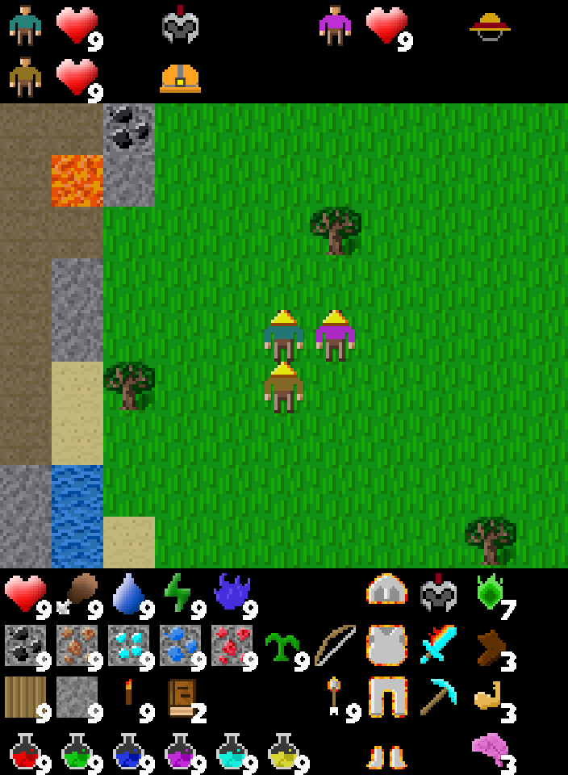
- An egocentric rendered view of the same world state — map, HUD, inventory and teammates.
Text
For language agents
Step: 0/10000 Role: forager
Position: (x=25, y=24)
You see:
- tree 3 steps north (x=25, y=21)
- construction_site 1 step north
- water 5 steps east (x=30, y=24)
Available: Move North · Do · Rest ·
Request Wood · Request Stone · ...
> <action>Move North</action>
> <communication>A1: I'll grab wood,
you mine the stone</communication>- Reason-then-act harness with scratchpad memory and broadcast messages.
View the full system prompt
Loading…Diverse coordination demands
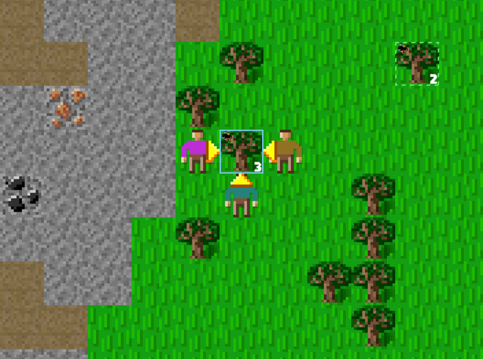
Soft specialization
Role penalties reward dividing labour across forager, miner and warrior.
Handover
One agent begins, another completes within a time window; temporal slack makes it the most accessible.
Synchronous
Agents converge on a shared target and act on the same timestep; the hardest demand.
Construction
Gather resources, climb a tech chain, converge, and execute a multi-step build.
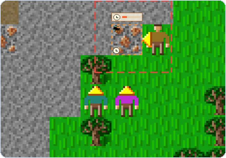
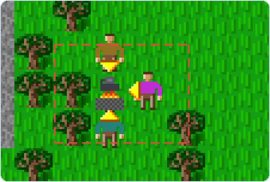
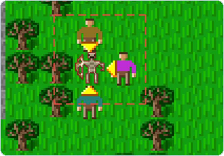
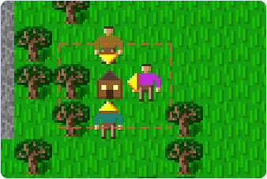
Scoring structure
Base66individual progress achievements
Coordination27explicit multi-agent achievements
Total93normalised episode return, scored per category
04 · Paper results
What the benchmark reveals
13 LLMs in zero-shot three-agent teams, compared against trained MARL references. All comparisons use 95% bootstrap confidence intervals; Base%, Coord.% and Total% are normalised independently.
Click any result to read the detail.
Q1 · zero-shotAlem is unsolved, but separates models
Alem remains far from saturated by both zero-shot LLMs and trained MARL, while separating models across a broad range. On Easy, Total% spans 0.8% (Llama-3.1-8B) to 18.1% (Gemini 3.1 Pro); on Hard, LLMs average only 6.2% Total%. The top model reaches 17.5% Coord.% on Hard — comparable to the 17.6% of MARL trained for one billion environment steps.
Q1 · decompositionBase competence does not guarantee coordination
Decomposing performance reveals failures hidden by aggregate scores. GPT-5.4 achieves the second-highest Base% across difficulties, yet its Coord.% lags behind smaller models such as Gemma-4-26B-A4B on Hard, with non-overlapping 95% CIs. General environment competence does not guarantee coordinated multi-agent behaviour.
Q1 · difficultyMost LLM agents do not exploit the difficulty axis
Trained MARL degrades as coordination difficulty increases, but aggregate LLM Total% remains nearly flat at ≈6% across Easy, Medium, and Hard. Most LLM agents do not coordinate reliably enough for the difficulty parameter to strongly affect aggregate performance.
Q1 · task structureCoordination failures differ across task structure
Coordination is not a single axis. Handover tasks are comparatively more accessible because they allow temporal slack. Synchronous-Hard tasks require agents to identify a shared target, navigate to compatible positions, communicate intent, and act in the same timestep — Gemini 3.1 Pro leads LLMs here with only 18% coverage.
Q2 · ablationsCommunication is critical for coordination
Removing communication produces the largest drop in coordination for both models tested: Gemini 3.1 Pro falls from 17.5 to 5.3 Coord.%, and Gemma-4-31B from 8.8 to 3.8. Reasoning supports both base and coordination reward; scratchpad memory helps mainly when used to plan ahead.
Q3 · compositionHeterogeneous teams perform near the homogeneous-team average
Mixed teams land close to the average of their corresponding homogeneous teams: the same-family Gemma team is slightly above (+0.1 Total%), the cross-family team slightly below (−0.1 Total%). Adding a stronger model is not sufficient to lift team performance.
Diagnostics
Click any plot to read the detail.
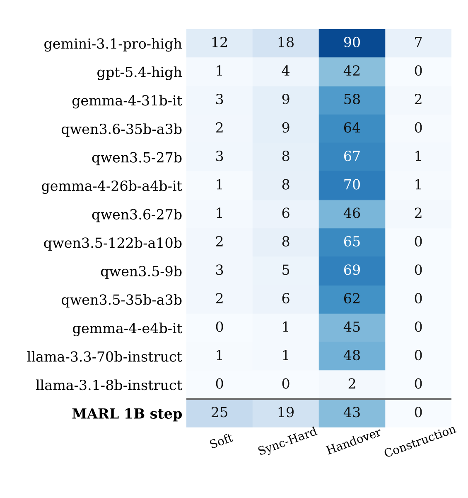
Coordination coverage by type.
Coordination is not a single axis. Handover tasks are comparatively more accessible because they allow temporal slack — one agent can initiate an opportunity and another complete it within a bounded time window. By contrast, Synchronous-Hard tasks require agents to identify a shared target, navigate to compatible positions, communicate intent, and act in the same timestep. Gemini 3.1 Pro leads LLMs on synchronous-hard coordination with only 18% coverage, while the next-best reach 9%.
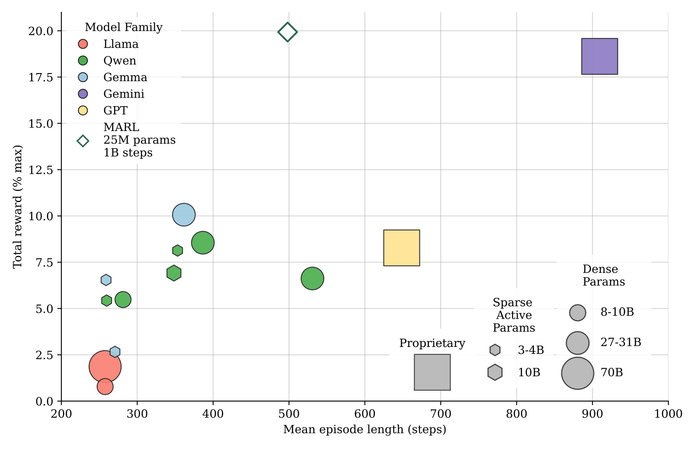
Survival vs reward.
Many models survive for long episodes despite low returns. Mean episode length versus Total% reward shows that longer survival does not necessarily translate into progression or coordinated achievements. This suggests the main bottleneck is not basic survival or interface parsing, but converting interaction time into coordinated progress.
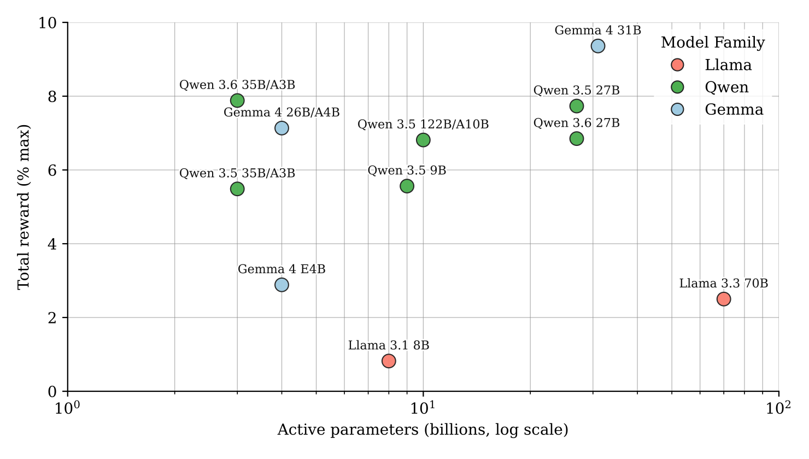
Scale vs performance.
Across open-weight models, performance is not monotonic in parameter count. Even within model families such as Gemma-4 and Qwen-3.5/3.6, coordination performance does not scale linearly across dense and mixture-of-experts variants. This suggests coordination depends on factors beyond raw scale, including post-training, reasoning, and how effectively agents use communication.
Harness ablations
Click either plot to read the detail.
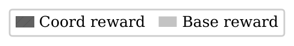
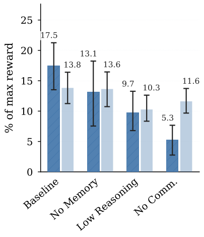
Gemini 3.1 Pro ablations.
For coordination, communication matters most, then reasoning, then memory. Removing communication produces the largest drop, from 17.5 to 5.3 Coord.%. Reasoning is the only ablation that lowers both Base% and Coord.%. Scratchpad memory helps mainly when used as a forward-looking planner.
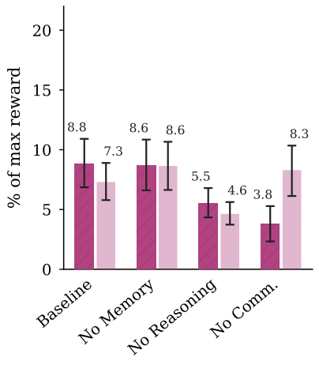
Gemma 4 31B ablations.
Gemma-4-31B shows the same ordering: removing communication is the largest drop, from 8.8 to 3.8 Coord.%. Without reasoning, Gemma writes longer scratchpads that partly substitute for it, but the compensation is incomplete — both Base% and Coord.% still fall.
Heterogeneous teams (Hard)
Paper figure: mixed teams land close to the average of their homogeneous members.
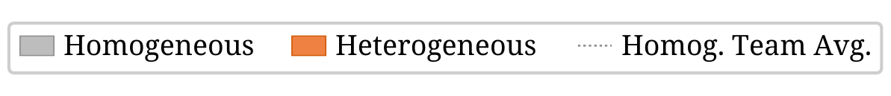
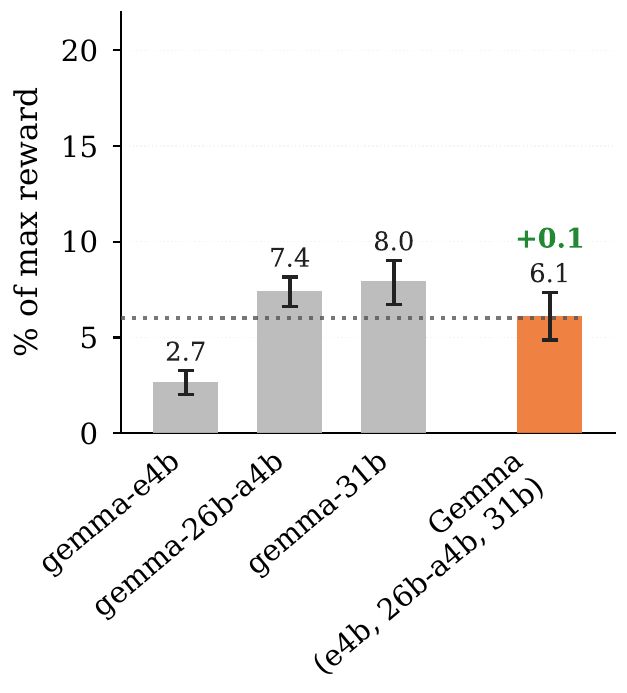
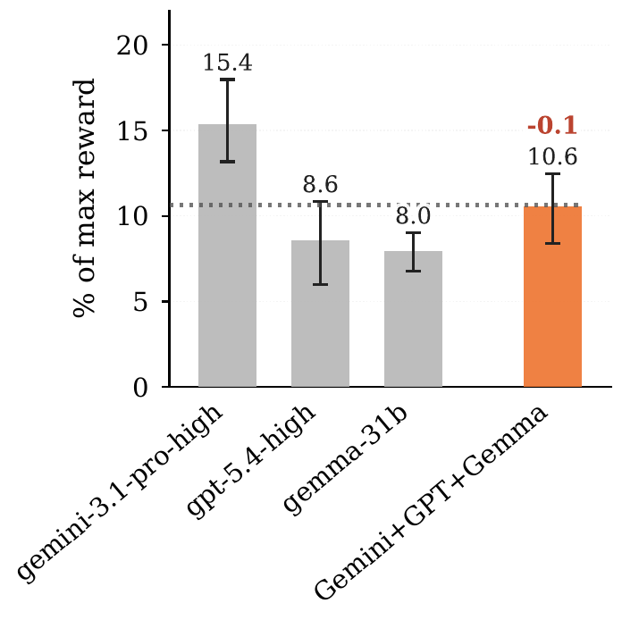
Reference
Citation
@article{tessera2026alem,
title = {Benchmarking Open-Ended Multi-Agent Coordination in Language Agents},
author = {Tessera, Kale-ab Abebe and Szecsenyi, Andras and Barker, Cameron and
Rutherford, Alexander and Paglieri, Davide and Scannell, Aidan and
Gouk, Henry and Crowley, Elliot J. and Rockt\"{a}schel, Tim and
Storkey, Amos},
year = {2026},
url = {https://arxiv.org/abs/2606.08340}
}